<div class="container">
  <div class="row">
    <div class="col-sm-10 col-sm-offset-1">
      <header style="margin: 2rem 0;">
        
      </header>
      <ul class="nav nav-tabs top-nav">
        <li class="active"><a href="{{site.sochi}}"><i class="ion-speedometer"></i>Overview</a></li>
        <li><a href="{{site.sochi}}countries.html"><i class="ion-earth"></i>Countries</a></li>
        <li><a href="{{site.sochi}}athletes.html"><i class="ion-ios7-people"></i>Athletes</a></li>
      </ul>
      <section class="page">
        <div class="panel panel-sochi">
          <div class="panel-heading">
            <div class="js-range btn-group pull-right">
              <button type="button" data-offset="-5" class="btn btn-primary js-move">Left</button>
              <button type="button" class="btn btn-default disabled value">1-5</button>
              <button type="button" data-offset="5" class="btn btn-primary js-move">Right</button>
            </div>
            <h4>Top countries</h4>
          </div>
          <div class="panel-body">
            <canvas id="top-countries" width="900" height="250"></canvas>
          </div>
        </div>
        <div class="panel panel-sochi">
          <div class="panel-heading">Top athletes</div>
          <div class="panel-body">
            <canvas id="top-athletes" width="900" height="250"></canvas>
          </div>
        </div>
      </section>
    </div>
  </div>
</div>

<script>
getMedalsByCountries(0, function (chartData) {
  Chartmander.addChart(function(){
    var chart = Chartmander.select("top-countries", "categoryBar");
    var medals = parseMedals(chartData);
      chart.bars
        .fontColor("#fff")
        .margin({left: 30})
        .colors(["#c35f00", "#e3e3e3", "#ffbf00"]);
      chart.grid.lineColor("rgba(0,0,0,.3)");

      chart.render(medals);
      return chart;
  });
});

getMedalsByAthletes(0, function (chartData) {
  Chartmander.addChart(function(){
    var chart = Chartmander.select("top-athletes", "categoryBar");
    var medals = parseMedals(chartData);
      chart.bars
        .fontColor("#fff")
        .margin({left: 30})
        .colors(["#c35f00", "#e3e3e3", "#ffbf00"]);
      chart.grid.lineColor("rgba(0,0,0,.3)");

      chart.render(medals);
      return chart;
  });
});
</script>
